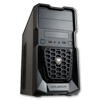
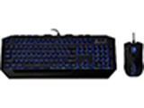

Tom's Hardware is a great place to look for builds and info from people who have done this before. They have how to's and a helpful community. They have a System Builder Marathon that is all about building your own PC. Another good site to use is pcpartpicker.com. It lets you pick parts for your computor and tells you if they are compatable. It even show the estimated wattage of the build which will help pick a power supply. A good website for buying and comparing parts is Newegg.They have all the parts that you would need and complete PC's.
I built a PC for gaming. I had a budget of $750 and this is what I came up with.
I started with the case. I chose a cougar spike because it was small and cheap. After I picked the case I started looking at motherboards. I chose an ASUS B85M-E/CSM because it fit my case and had usb 3.0 connectors. My processor is an intel i-5 3 ghz. For ram I chose a G.SKILL Ripjaws X Series 8GB stick. I chose it because I will have the option to buy a second 8GB stick and have 16GB total. My graphics card is an MSI 1060. It has 1 built in fan. My power supply is a Cosair cx500 500 watt. My HDD is a 1tb Western digital. I have 1 ASUS DVD reader and burner.  My keyboard and mouse came in a bundle. They are the cm storm Devestator with blue led backlight.